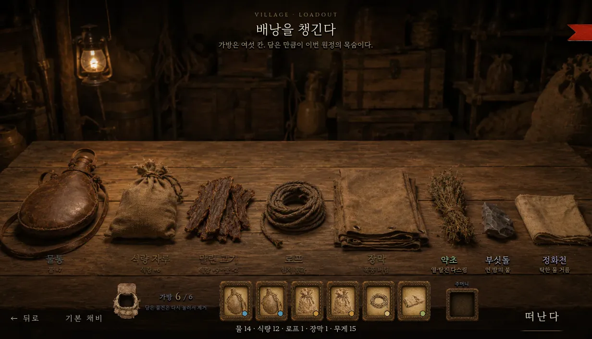
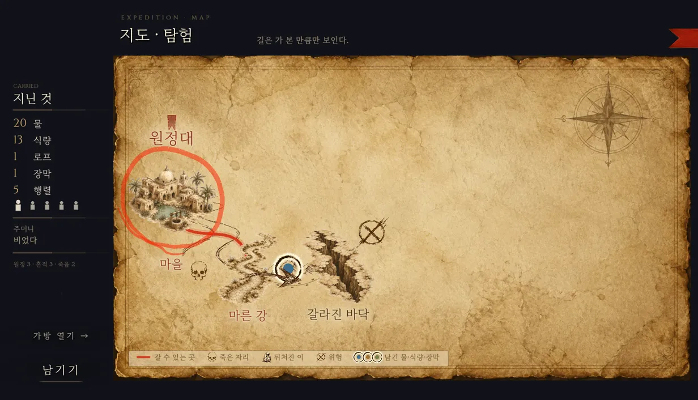
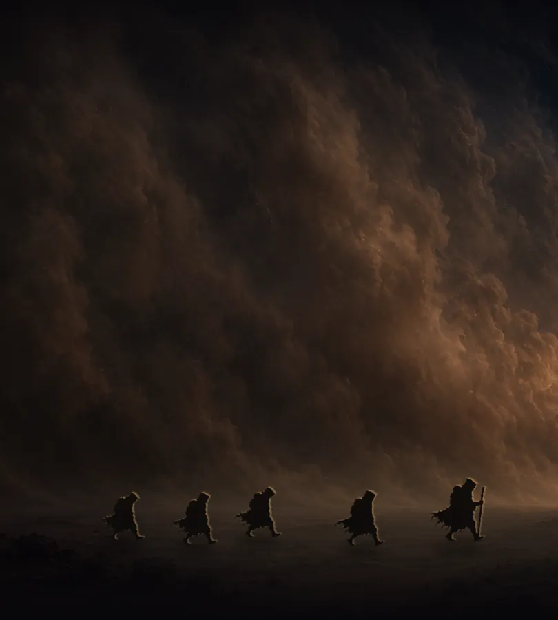

EXPEDITION RECORD
See you on
the other side
폭풍이 지나가고 모래가 가라앉으면,
재앙을 멈추러 원정대가 떠납니다.
모래폭풍은 글을 지웁니다. 말은 남지 않고, 물건만 남습니다.
무료 · 브라우저 · 설치 없음
LEG I · VILLAGE
가방은 여섯 칸. 담은 만큼이 이번 원정의 목숨이다.

물통과 식량, 로프와 장막. 무게가 12를 넘으면 걸음마다 물이 더 듭니다.

마른 강에서 폭풍의 문까지. 갈림길마다 걸음 수와 위험이 다릅니다.

한 걸음마다 물이 줄고, 위기는 예고 없이 옵니다. 대부분 돌아오지 못합니다.
LEG II · THREATS
위협은 세 갈래, 준비도 세 갈래.
소모
갈증과 굶주림. 물통과 식량이 막습니다. "몸이 불덩이 같다" 같은 위기가 물을 앗아 갑니다.
차단
갈라진 틈과 벽. 로프가 막습니다. 한 번 건 로프는 다음 원정에도 다리로 남습니다.
폭풍
"느닷없이 모래바람이 몰아친다." 장막이 막습니다. 없으면 이를 악물고 버팁니다.
LEG III · BEQUEATH
죽기 전 단 한 번, 물건 하나를 남길 수 있다.
"물건 하나를 여기 둔다. 그만큼 잃지만, 계속 갈 수 있다."
"말은 남지 않는다. 물건만 남는다."
남긴 물건에는 두 단어까지 새길 수 있습니다. 다음 원정대는 그 자리에서 이런 카드를 만납니다: "이전 원정대가 남긴 물통. 아직 쓸 만하다. 곁의 표식: [ 또 · 봐 ]"
LEG IV · PRACTICE
미니 원정: 마른 강까지
물이 얼마 남지 않았습니다. 건너편에서 봅시다.